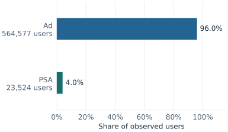
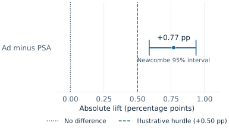

01. The business question
A marketing team deciding whether to expand an ad campaign needs to understand the size and uncertainty of the conversion difference. This analysis compares the share of users with a purchase recorded in the ad and public service announcement (psa) groups.
The primary measure is the ad conversion rate minus the PSA conversion rate, in percentage points. Relative lift uses the PSA rate as its denominator.
02. Data and assignment audit
The release contains 588,101 unique user records. Each user has a single recorded exposure group and a binary converted outcome. The observed groups are 564,577 ad-exposed users and 23,524 PSA-exposed users.
- Total users
- 588,101
- Ad exposure
- 564,577
- PSA exposure
- 23,524

The planned split, assignment logs, and pre-exposure covariates are unavailable. This makes it impossible to verify randomization or check pre-exposure balance. Every released user has a recorded exposure, so the comparison describes observed groups. An intent-to-treat analysis would require records for all assigned users, including those who saw neither an ad nor a PSA.
Favio Vázquez. Marketing A/B Testing, version 1. Accessed November 18, 2026. Kaggle dataset · CC0 1.0
03. Analysis workflow
- Validate user records
- Audit group allocation
- Compare conversions
- Estimate uncertainty
- Assess practical size
Define the comparison
I check unique users, group labels, binary outcomes, and exposure ranges before summarizing conversion. The primary comparison excludes total ads, most ads day, and most ads hour because they describe exposure after assignment. Adjusting for them could distort the group comparison.
Estimate uncertainty
A two-sided pooled z-test evaluates equal conversion proportions. A Newcombe 95% confidence interval, built from Wilson intervals for the two rates, describes uncertainty in the absolute difference. The calculations treat user outcomes as independent.
Put the difference in context
An illustrative 0.5 percentage-point benchmark corresponds to 50 conversions per 10,000 comparable users. Presenting the observed difference and its interval at the same population size gives readers a way to judge practical size. A rollout decision would also need cost, contribution margin, and an estimate of incremental conversions.
04. Conversion results
The observed ad conversion rate was 2.555%. The PSA rate was 1.785%. The difference was +0.769 percentage points (95% Newcombe CI 0.587 to 0.936 pp), or 43.1% relative to the PSA rate.
| Recorded exposure | Users | Conversions | Share | Conversion | Wilson 95% CI |
|---|---|---|---|---|---|
| Advertisement | 564,577 | 14,423 | 96.00% | 2.555% | 2.514 to 2.596% |
| Public service announcement | 23,524 | 420 | 4.00% | 1.785% | 1.624 to 1.963% |
Statistical uncertainty and practical size
The pooled two-sided test gave z = 7.370 and p = 1.71e-13. It tests equal conversion proportions under the independence assumption.
The observed difference corresponds to about 77 more recorded conversions per 10,000 comparable users, with a 95% interval of 59 to 94. The interval clears the illustrative +0.50 pp hurdle. Choose a campaign-specific hurdle before the next test.


05. Recommendations and limits
Use the measured gap to plan a controlled follow-up. Record the intended allocation, log assignment and exposure separately, and include every assigned user in the primary analysis. Define the conversion window and a minimum detectable lift before launching.
Choose the minimum actionable lift from the cost of serving the ad and contribution margin per incremental conversion. Collect those inputs before using the follow-up to make a rollout decision.
The confidence interval and test address sampling uncertainty under the stated assumptions. Assignment and exposure selection could contribute to the observed difference. Verified random assignment and outcomes for all assigned users would support an estimate of incremental conversion.
The public extract omits spend, product margin, and campaign economics. A business decision would need those inputs and a design that can estimate incremental conversions at the intended scale.
06. Reproduce the study
The pipeline downloads the pinned version 1 archive through Kaggle’s public API, validates the user records, and exports aggregate statistics and charts. It caches the download in the project’s ignored data/raw directory. The project includes its dependency versions, data dictionary, and tests.
cd projects/marketing-ab-test
python -m pip install -r requirements.txt
python -m src.run